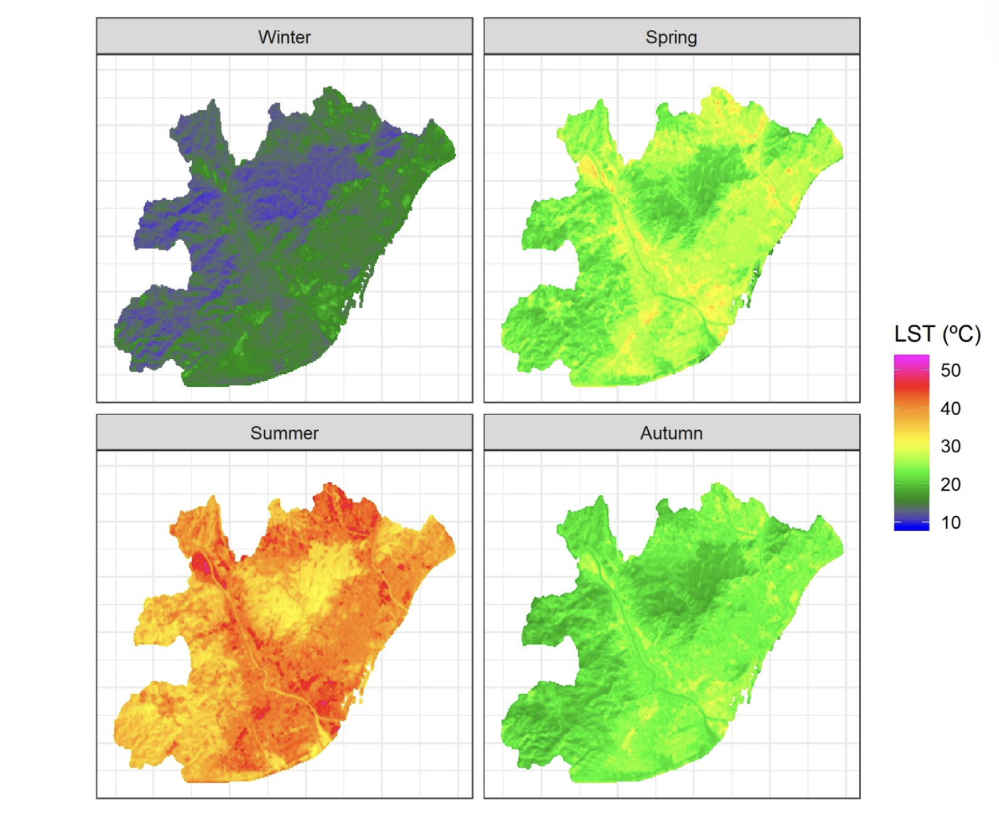

4 Remote Sensing in Urban Policy: Addressing Heat Stress in Barcelona
4.1 Summary
This week, my focus shifted to Barcelona, a city where I have lived and personally experienced the challenges of extreme urban heat. Walking through neighbourhoods like El Raval and Poblenou during summers, I have experienced firsthand how the city’s narrow streets, dense building clusters, and limited green spaces create a pronounced Urban Heat Island (UHI) effect. Academic research confirms that Barcelona’s extensive impervious surfaces and sparse vegetation lead to significant thermal stress (Lemus-Canovas et al., 2020).
For the analysis and after reading how other researchers have used remote sensing to study the UHI effect, different datasets could be integrated: Landsat 8’s thermal infrared bands provide high-resolution land surface temperature (LST) maps that could show a clear correlation between areas with low NDVI (less vegetation) and higher temperatures; Sentinel-2’s optical imagery could help derive vegetation indices to pinpoint where green space is lacking; and MODIS data could contribute to get data for continuous day-and-night temperature profiles. Together, these datasets offer a comprehensive picture of the diurnal cycle of urban heat, including the critical aspect of nighttime heat retention. This fusion of data, as demonstrated by Arellano and Roca (2019; 2021; 2022), could help policymakers with temporally comprehensive heat maps that inform both immediate interventions and long-term planning.
4.2 Applications
Remote sensing provides a powerful toolkit for tackling the UHI challenge in Barcelona. Researchers like Arellano and Roca have shown that integrating MODIS data with Landsat 8 imagery produces maps that capture both daytime peaks and persistent nighttime heat (Arellano & Roca Cladera, 2019; Arellano & Roca, 2021). This multi-sensor, multi-temporal approach informs policymakers about where to focus interventions—for instance, by locating “climate shelters” in areas that remain hot at night or by prioritising tree planting in zones where green cover is critically low. Studies by Marando et al. (2022) and Iungman et al. (2023) further support these strategies by quantifying the cooling benefits of urban green infrastructure. They report that even a modest increase in urban vegetation can lower local temperatures by up to 2.5°C and improve public health outcomes, providing a clear scientific rationale for setting and monitoring greening targets in Barcelona.
Academic literature consistently shows that Barcelona’s UHI is largely driven by its high building density, extensive impervious surfaces, and limited urban vegetation and Lemus Lemus-Canovas et al. (2020) Analysis using Partial Dependence plots also showed that factors like distance to sea, rivers, altitude, building density, and vegetation cover have varying impacts on Barcelona’s surface temperature throughout the year. The sea cools nearby areas in summer but has less effect in winter. Rivers are cooler in winter but warmer in other seasons due to industry. Higher altitude is always cooler, but less so in winter. More buildings mean higher temperatures, especially in summer, while more vegetation consistently lowers temperatures, particularly in spring and summer.

Landsat 8 data, as used by Jimenez-Munoz et al. (2014) have allowed for detailed mapping of these thermal anomalies. When these temperature maps are overlaid with NDVI data from Sentinel-2, the cooling impact of even small green spaces becomes evident. For instance, large parks and tree-lined avenues not only exhibit lower temperatures themselves but also extend a cooling effect to nearby areas, creating “cool islands” within the urban fabric (Bouketta, 2023).
Such quantitative evidence has directly influenced Barcelona’s urban policy. For example, remote sensing data is used to monitor the progress of greening initiatives under the Barcelona Nature Plan 2030 Ajuntament de Barcelona (2021), which seeks to increase the city’s green cover. The Urban Tree Master Plan Trees for Life (2022) similarly relies on satellite data to map tree canopy density and evaluate the cooling effects of tree planting efforts. Yet, despite these promising applications, there is still a need for policies to include explicit methodological details about the integration of remote sensing techniques, ensuring that these strategies remain transparent and effective over time.
4.3 Reflection
Reflecting on this week’s exploration, I am surprised by how my personal experiences with Barcelona’s heat are also seen in the scientific data. The process of merging data from Landsat 8, Sentinel-2, and MODIS has shown the transformative potential of remote sensing in providing a clear, objective basis for urban policy decisions. While the technical challenges—such as reconciling differing spatial and temporal resolutions—are significant, the benefits of a data-driven approach to mitigating UHI are equally compelling.
This analysis of the existing policies and remote sensing research has reinforced my belief that evidence-based policy is the key to creating more sustainable and resilient urban environments. The insights gained from remote sensing not only help identify heat-vulnerable areas but also support the planning and monitoring of urban greening initiatives. I am particularly interested in exploring advanced data fusion techniques and machine learning methods to further enhance these analyses in the future. Integrating scientific research with practical policy measures could help ensure that interventions, such as increasing green infrastructure, are both effective and equitably distributed across Barcelona. I am excited by the prospect of continuing to refine these approaches and applying them for a cooler Barcelona.